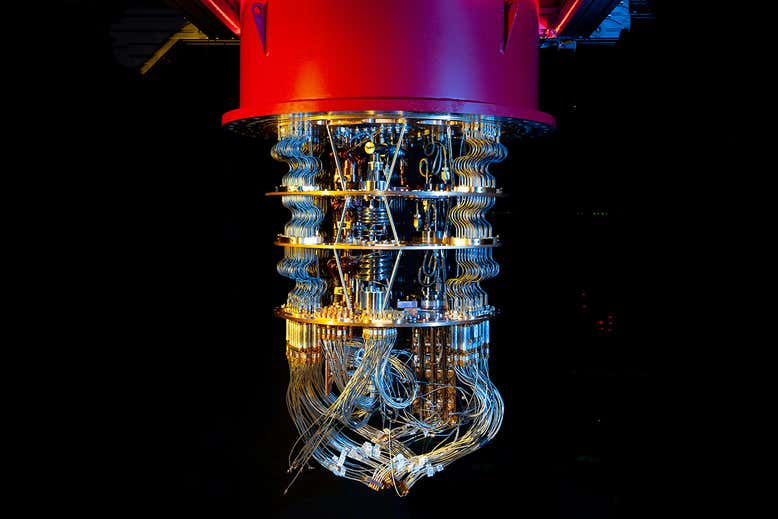

Google performed the first quantum simulation of a chemical reaction
You can immediately download Google researchers have used a quantum computer to simulate a chemical reaction for the first time. The reaction is a simple one, but this marks a step towards finding a practical use for quantum computers. Because atoms and molecules are systems governed by quantum mechanics, quantum computers are expected to be the best way to precisely simulate them. These computers use quantum bits, or qubits, to store information and perform calculations. However, quantum computers have difficulty achieving the precision needed to simulate large atoms or chemical reactions. A team at Google has used the company’s Sycamore device to perform the first accurate quantum simulation of a chemical reaction. Sycamore achieved quantum supremacy in 2019 when it carried out a calculation that would be impossible for a classical computer to perform in a practical amount of time.
For the computer’s latest feat, the researchers simulated a diazene molecule, which consists of two nitrogen atoms and two hydrogen atoms, undergoing a reaction in which the hydrogen atoms move into different configurations around the nitrogens. The quantum simulation agreed with simulations the researchers performed on classical computers to check their work. While this reaction may be relatively basic, and it isn’t necessary to have a quantum computer to simulate it, this work is still a big step forward for quantum computing, says Ryan Babbush at Google. “We’re doing quantum computations of chemistry at a fundamentally different scale now,” he says. “The prior work consisted of calculations you could basically do with pencil and paper by hand, but the demonstrations we’re looking at now, you’d certainly need a computer to do it.” Scaling this algorithm up to simulate more complex reactions should be fairly easy, says Babbush: simulating reactions in bigger molecules will simply require more qubits and small tweaks to the calculation. Someday, we may even be able to develop new chemicals using quantum simulations, he says.